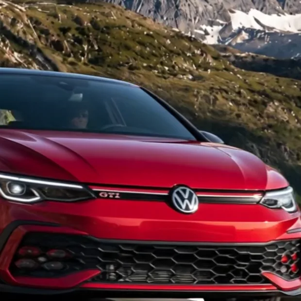
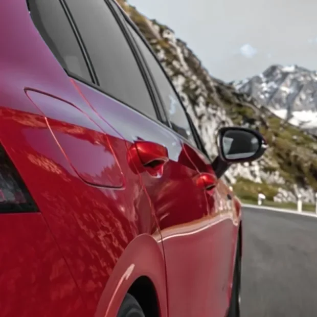
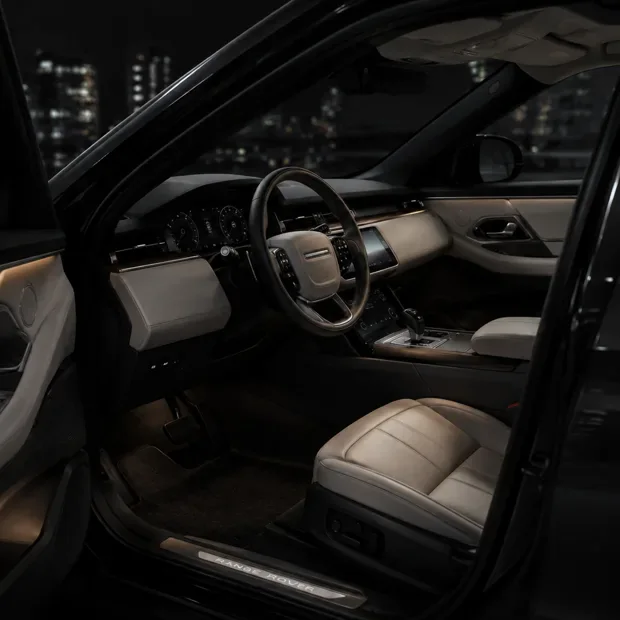

El futuro del diseño: naturaleza y rendimiento
Exploramos cómo la ingeniería y el diseño sustentable están redefiniendo la próxima generación de vehículos.
Ir al garageNo elegimos autos por su año.
Los elegimos por su historia.
Bienvenidos a nuestra colección de unidades seleccionadas.



Exploramos cómo la ingeniería y el diseño sustentable están redefiniendo la próxima generación de vehículos.
Ir al garageDecinos qué estás buscando y lo rastreamos en el mercado global. Y si lo que tenés es un auto para vender, también es acá.


Ninguna unidad se publica antes de pasar por acá.
Certificación de estructura, pintura y motor por expertos.
Unidades 100% listas para transferir sin sorpresas legales en Buenos Aires.
Tu depósito de seguridad congelado bajo absoluta garantía de reembolso.

La calle de las casas pintadas: unas cuarenta fachadas intervenidas por Marino Santa María en pintura y mosaico veneciano, declarada Sitio de Interés Cultural por la Legislatura porteña.
Abrir en Google Maps